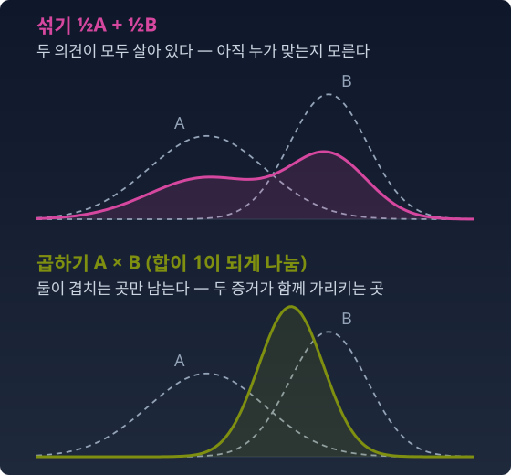
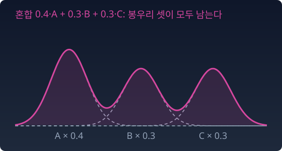

무지와 확신
회의에서 세 사람의 의견을 하나로 모아야 한다고 해 보자. 길은 크게 둘이다. 「셋 가운데 누군가는 맞겠지」 하고 세 의견을 모두 살려 두는 길, 그리고 「셋이 함께 가리키는 곳만 믿는다」 하고 겹치는 곳만 남기는 길이다. 이미지 생성 도구를 써 본 사람은 둘 다 해 봤다. 「소녀 또는 고양이」 가운데 하나를 아무거나 그리게 하는 것과, 「소녀」에 「웃는 얼굴」을 덧붙여 조건을 좁히는 것.
확률로 옮기면 앞의 길은 분포를 섞는(더하는) 일이고, 뒤의 길은 분포를 곱하는 일이다. 같은 두 분포에서 출발해도 두 길은 전혀 다른 분포에 닿는다.

이 장은 두 길을 확률의 말로 읽는다. 섞는 길은 「아직 누가 맞는지 모른다」를 적고, 곱하는 길은 「증거가 쌓였다」를 적는다. 그리고 물음 하나를 끝까지 들고 간다. 분포 사이의 작은 걸음을 재는 자는 피셔 정보(분포를 정하는 숫자를 조금 움직일 때 분포가 얼마나 달라지는지 재는 양) 하나뿐이다. p에서 q로 재나 q에서 p로 재나 발밑의 거리는 같다. 그런데 왜 「곧은 길」은 둘인가?
혼합: 무지의 고백
아직 검사를 하기 전이라 세 의견 가운데 누가 맞는지 모른다. 그렇다면 세 의견을 하나도 버리지 않고 하나의 분포로 적으려면 어떻게 해야 할까? 섞는다는 것은 바로 「아직 누가 맞는지 모른다」를 적는 방법이 아닐까?
의사의 아침 — 세 의견을 섞다
환자가 두통을 호소한다. 아침 회진. 신경과 의사는 「편두통일 가능성이 있다」라고 한다 — 분포 A. 안과 의사는 「녹내장일 가능성이 있다」라고 한다 — 분포 B. 내과 의사는 「고혈압일 가능성이 있다」라고 한다 — 분포 C.
아직 검사를 하지 않았다. 세 의사 중 누가 맞는지 모른다. 주치의는 세 의견을 「섞는다」. 0.4·A + 0.3·B + 0.3·C. 이것은 세 의견의 혼합(mixture)이다.
혼합분포의 모양을 보면 봉우리가 세 개다. 세 가능성이 전부 살아 있다. 아무것도 버려지지 않았다 — 아직 모르니까.

이미지 생성의 와일드카드 — 가능성을 넓히다
Stable Diffusion으로 그림을 그린다고 하자. 이 모델을 화면에서 쓰는 도구(AUTOMATIC1111 웹 UI)에는 「Dynamic Prompts」라는 확장이 있다. 프롬프트에 중괄호를 열고 후보를 세로줄(|)로 갈라 적으면, 그림을 뽑을 때마다 후보 가운데 하나를 무작위로 골라 넣는다. 아래의 「1girl」은 「여자 한 명」을 뜻하는 꼬리표(그림을 설명하는 짧은 말)다.
{1girl | 1boy | 1cat}
이것은 정확히 혼합분포다. 소녀의 이미지 분포, 소년의 이미지 분포, 고양이의 이미지 분포를 균등하게 섞는 것. 생성할 때마다 셋 중 하나가 나온다. 세 가능성이 공존한다 — 아직 뭘 그릴지 정하지 않았으니까.
와일드카드에 후보를 더할수록 가능성이 넓어진다.
{1girl | 1boy | 1cat | landscape | food}
선택지가 늘어난다. 표본 공간에서 분포가 차지하는 영역이 넓어지는 방향이다.
식으로
성분 분포 p1, …, pK를 혼합 비중 w로 섞으면 혼합분포가 된다.
혼합 비중 (0.4, 0.3, 0.3)은 심플렉스(합이 1인 음 아닌 수들이 이루는 영역. 수가 셋이면 삼각형) 위의 점이다. 와일드카드에 후보를 더하면 심플렉스의 차원이 올라간다. 혼합 비중을 바꾸면 심플렉스 위를 걷는다.
두 혼합 p0, p1 사이를 혼합 비중의 직선으로 걸으면, 그 길은 밀도를 그대로 섞는 길이다.
이것이 m-측지선(덧셈의 길)이다. 「최단 경로」라는 뜻이 아니다. 접속(무엇을 곧은 길로 볼지 정하는 규칙) 가운데 밀도를 더하는 길을 곧다고 보는 m-접속의 규칙으로 「곧게」 가는 길이라는 뜻이다. 성분을 고정한 혼합들의 모임에서는 혼합 비중 w가 바로 이 곧음의 좌표다. 그래서 혼합 비중을 바꾸는 일은 파라미터 공간에서 덧셈으로 걷는 일이다.
이 말은 성분을 고정한 혼합들의 모임 안에서 한 말이다. 가우시안들만 모은 모임처럼 다른 모임 안에서도 같은 말이 그대로 통하는지는 이 장 마지막 절 「사영」에서 따져 본다.
섞으면 얼마나 모르게 되는가
엔트로피는 「평균적 놀라움」, 곧 결과를 맞히기가 평균적으로 얼마나 어려운지 재는 양이다. 섞으면 평균적 놀라움이 커지는가? 정확히 말하면 이렇다.
왼쪽 부등식은 엔트로피의 오목성(섞은 것의 값이 값들의 평균보다 작지 않은 성질)이다. 혼합의 불확실성은 성분 불확실성의 평균보다 작지 않다. 오른쪽 끝의 H(w)가 「누가 맞는지 모른다」의 몫이다. 성분들이 서로 멀리 떨어져 있으면 혼합의 엔트로피는 위쪽 끝에 붙는다.
그렇다면 혼합 비중을 어디에 두어야 혼합이 가장 「모르는」 상태가 될까? 아래 파이썬은 폭이 같은 성분 셋으로 두 혼합 비중을 견준다. 성분의 폭이 서로 다르면 어떻게 되는지는 아래 문제 2에서 따진다.
불러오는 중…
파이썬
import numpy as np
x = np.linspace(-15, 25, 400001)
dx = x[1] - x[0]
def normal(m, s):
return np.exp(-0.5 * ((x - m) / s)**2) / (s * np.sqrt(2 * np.pi))
def H(p): # 미분 엔트로피: 연속분포의 엔트로피, 엔트로피를 미분한 값이 아니다 (적분을 합으로)
p = np.maximum(p, 1e-300)
return -np.sum(p * np.log(p)) * dx
comps = [normal(-4, 1), normal(0, 1), normal(4, 1)] # 폭이 같은 셋
for w in [(1/3, 1/3, 1/3), (0.2, 0.2, 0.6)]:
w = np.array(w)
mix = sum(wk * pk for wk, pk in zip(w, comps))
avg = sum(wk * H(pk) for wk, pk in zip(w, comps))
Hw = -np.sum(w * np.log(w))
print(f"w={np.round(w, 2)} H(혼합) {H(mix):.3f} ΣwH {avg:.3f} ΣwH+H(w) {avg + Hw:.3f}")
print(f"성분 하나의 H {H(comps[0]):.3f}")
# w=[0.33 0.33 0.33] H(혼합) 2.437 ΣwH 1.419 ΣwH+H(w) 2.518
# w=[0.2 0.2 0.6] H(혼합) 2.304 ΣwH 1.419 ΣwH+H(w) 2.369
# 성분 하나의 H 1.419
폭이 같은 셋에서는 균등한 혼합 비중(2.437)이 (0.2, 0.2, 0.6)(2.304)보다 엔트로피가 크다. 두 경우 모두 샌드위치 부등식은 지켜진다.
수확
「혼합하면 불확실성은 성분들의 평균보다 커진다. 와일드카드에 후보를 더하는 것이 혼합이다. 파라미터 공간에서는 덧셈의 길(m-측지선)을 걷는다.」
문제 1. 두 친구의 일기예보를 섞으면
내일 비가 올지를 두 친구에게 물었다. 한 친구는 (비 0.9, 맑음 0.1), 다른 친구는 (비 0.1, 맑음 0.9)라고 한다. 누구 말이 맞을지 몰라 두 예보를 반반 섞기로 했다. (가) 섞은 예보와 그 엔트로피(nat)를 구하라. (나) 두 친구 예보의 엔트로피 평균, 그리고 그 평균에 혼합 비중의 엔트로피 H(w)를 더한 값과 견주어라. (다) 두 친구가 둘 다 (비 0.9, 맑음 0.1)이라고 했다면 섞은 예보의 엔트로피는 얼마인가? 「누가 맞는지 모른다」의 몫은 어디로 갔는가?
함께 풀기

(가)는 섞으면 (0.5, 0.5)라서 엔트로피가 ln 2 ≈ 0.693이에요. 그런데 식으로도 해 봤어요. 친구 하나의 엔트로피가 0.325, 혼합 비중 (½, ½)의 엔트로피 H(w)가 0.693이니까 섞은 예보는 0.325 + 0.693 = 1.018이요. 둘 중 하나가 틀렸는데 어느 쪽인지 모르겠어요.

결과가 비와 맑음 두 개뿐인 예보에서 엔트로피 1.018이 나올 수 있어요?

…결과가 둘이면 가장 퍼진 (0.5, 0.5)도 0.693이에요. 1.018은 나올 수가 없네요. 오른쪽 끝을 등호로 쓴 게 틀렸어요.

그럼 (나)는 0.325 ≤ 0.693 ≤ 1.018. 샌드위치 안에 들어가. 그런데 오른쪽 끝에 붙으려면 뭐가 있어야 할까?
오른쪽 끝의 H(w)는 「어느 친구의 예보에서 나온 결과인지 모른다」의 몫이었어요. 내일 비가 온 걸 보면, 그 비가 어느 친구의 예보에서 나왔는지 알 수 있어요?

아니요. 비는 두 예보 모두에 들어 있으니까 결과만 보고는 출처를 못 가려요. 두 예보가 같은 결과를 나눠 갖고 있어서 그 몫이 다 얹히지 않는 거예요. 결과만 봐도 누구 예보에서 나왔는지 알 수 있을 만큼 두 예보가 겹치지 않아야 오른쪽 끝에 붙겠네요.
(다)는요?
둘 다 (0.9, 0.1)이면 섞어도 (0.9, 0.1)이니까 0.325예요. 이번엔 왼쪽 끝이랑 같아요. 누가 맞는지 몰라도 두 말이 같으니까 더 모를 게 없네요.
조별 과제에서 두 사람이 같은 답을 냈으면 누구 걸 내도 상관없는 거랑 같네요.
문제 2. 한가운데가 가장 모르는 곳인가
성분 세 개 N(−5, 0.3²), N(0, 0.3²), N(5, 3²)를 섞는다. (가) 혼합 비중이 (⅓, ⅓, ⅓)일 때와 (0.2, 0.2, 0.6)일 때 혼합의 엔트로피를 비교하라. (나) 혼합의 엔트로피가 성분 엔트로피의 가중평균 이상임을 보이고, 혼합 비중 (0.2, 0.2, 0.6)에서 이 부등식을 확인하라. (다) 혼합의 엔트로피는 가장 넓은 성분 N(5, 3²) 하나의 엔트로피보다 언제나 큰가? (위 위젯에서 「문제 2의 성분」을 고르면 이 세 성분을 불러올 수 있다.)
함께 풀기
이건 금방 했어요. 처음엔 폭이 전부 1인 성분으로 해 봤는데 한가운데가 최대였어요. 그래서 (가)는 균등이 크다, 끝.
문제의 성분으로 돌려 봤어요?
…돌렸더니 균등이 2.010이고 (0.2, 0.2, 0.6)이 2.456이에요. 균등이 더 작아요.
폭이 같을 때는 왜 한가운데가 최대였을까요?
셋이 대칭이라서요. 어느 성분도 특별하지 않으니까 최대점도 대칭인 자리, 한가운데에 있어야 하고. 여기서는 넓은 성분 하나가 특별하니까 거기로 쏠리고요.
조별 과제에서 셋이 같은 분량을 나누면 공평한데, 한 명 파트가 세 배 크면 균등 배분이 공평한 게 아닌 거랑 비슷하네요.
(나)는 엔트로피가 오목하니까 바로 나와요. H(Σw p) ≥ Σ w H(p). 숫자로는 2.456 ≥ 1.597이에요.
그러니까 (다)의 답은 「예」예요. 섞으면 성분보다 더 모르게 되니까, 혼합은 가장 넓은 성분보다도 엔트로피가 커요.
부등식의 오른쪽이 뭐였죠?

가중평균이요. 평균이니까… 가장 큰 성분보다 작을 수 있어요. 넓은 성분 하나는 2.518인데 (0.2, 0.2, 0.6) 혼합은 2.456이네요. 넓은 성분만 쓰는 게 더 모르는 상태예요.
그래요. 그럼 부등식이 말하는 「무지」는 정확히 뭘까요?
차이 H(혼합) − Σ w H(p)가 얼마인지 봐야겠네요. 2.456 − 1.597 = 0.859. 이게 H(w) = 0.950보다 작아요.
아, 이 차이가 「표본 하나를 봤을 때 그게 어느 성분에서 왔는지 모르는 정도」예요. 성분들이 완전히 떨어져 있으면 표본만 보고 성분을 맞힐 수 있으니 이 몫이 H(w) 전부가 되고, 겹칠수록 줄어요. 아까 일기예보에서 비가 누구 예보에서 나왔는지 못 가렸던 것과 같아요. 오목성은 「누가 맞는지 모름」이 얹힌다는 말이지, 무조건 가장 넓은 성분보다 넓어진다는 말이 아니에요.
정확해요. 그 차이는 성분 번호와 표본 사이의 상호정보량(하나를 알면 다른 하나의 불확실성이 얼마나 줄어드는지 재는 양)이에요. 「누가 맞는지 모른다」가 정확히 그만큼의 엔트로피예요.
해석학에서 젠센 부등식을 쓸 때 교수님이 「평균과 비교하는 거지 최댓값과 비교하는 게 아니다」라고 몇 번이나 적으셨는데, 그 말이 여기서 걸리네요.
문제 3. 모델끼리 갈린 것과 사진이 애매한 것
사진 한 장이 고양이인지 개인지 가리는 분류 모델 세 개로 앙상블(따로 학습한 모델 여러 개의 예측을 평균해 쓰는 방법)을 만들었다. 앙상블은 세 모델의 예측을 같은 비중으로 섞는다. 사진 A에서는 세 모델이 모두 (고양이 0.5, 개 0.5)를 냈다. 사진 B에서는 세 모델이 (0.98, 0.02), (0.02, 0.98), (0.5, 0.5)를 냈다. (가) 두 사진에서 앙상블의 예측과 그 엔트로피(nat)를 구하라. (나) 두 사진에서 모델별 예측 엔트로피의 평균을 구하고, 앙상블 예측의 엔트로피와의 차이를 구하라. (다) 사람에게 라벨을 물어 학습 데이터에 더한다면 어느 사진이 더 도움이 되겠는가?
함께 풀기
둘 다 섞으면 (0.5, 0.5)라서 엔트로피 0.693이에요. 앙상블 입장에서는 두 사진이 똑같이 모르는 사진이네요. 그럼 (다)는 아무거나 골라도 되고요.
(나)를 먼저 해 볼래요?
A는 모델마다 0.693이니까 평균도 0.693, 차이는 0이에요. B는 0.098, 0.098, 0.693이라 평균 0.296, 차이 0.397이요.

섞은 값은 같은데 속이 완전히 달라요. A는 세 모델이 다 「반반」이라고 말한 거고, B는 두 모델이 서로 반대쪽을 확신한 거예요.
일기예보 문제랑 같은 꼴이야. 0.397이 「어느 모델 말이 맞는지 모른다」의 몫이고, 0.296은 모델 하나하나가 이미 모르는 몫이야.
그럼 (다)는요? 라벨을 하나 받아 학습하면 두 몫 가운데 어느 쪽이 줄어들까요?
모델끼리 갈린 몫이요. 라벨을 보고 학습하면 틀린 쪽 모델이 고쳐지니까요. A는 세 모델이 모두 반반이라고 한 걸 보면 사진 자체가 애매한 것 같아요. 모델을 고쳐도 크게 줄지 않을 몫이에요. 그러니까 B예요.
그래요. 앙상블이나 베이즈 신경망의 불확실성을 실제로 이렇게 「모델끼리 갈린 몫」과 「데이터 자체가 애매한 몫」으로 나눠 봐요. 앞의 몫이 큰 데이터일수록 새로 라벨을 붙일 값어치가 크다고 보고요.
조교님들이 채점자 셋의 점수가 갈린 답안만 모아서 다시 회의하신다던데, 그거네요. 셋이 다 「애매하다」고 한 답안은 다시 봐도 애매하니까요.